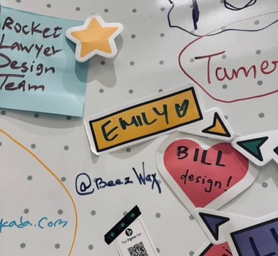
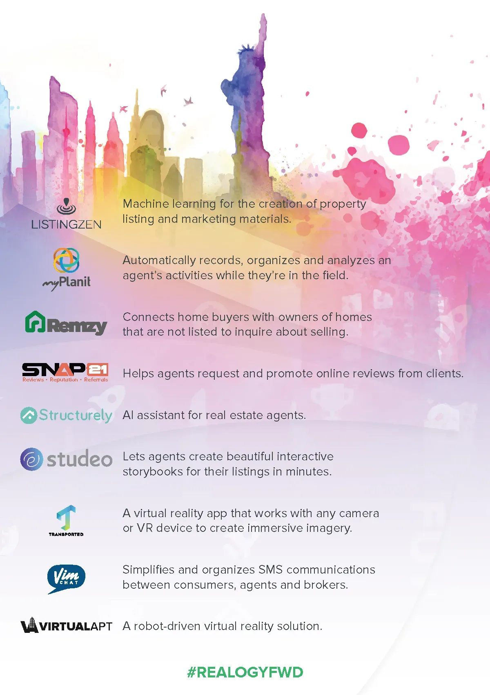

<?xml version="1.0" encoding="UTF-8"?><rss xmlns:dc="http://purl.org/dc/elements/1.1/" xmlns:content="http://purl.org/rss/1.0/modules/content/" xmlns:atom="http://www.w3.org/2005/Atom" version="2.0" xmlns:media="http://search.yahoo.com/mrss/"><channel><title><![CDATA[Mekuria // Getinet]]></title><description><![CDATA[I am a UX/UI & Visual designer with experience leading design and front-end development teams. I have expertise in designing and developing the user experience for web-based applications, complex webs]]></description><link>../</link><image><url>../favicon.png</url><title>Mekuria // Getinet</title><link>../</link></image><generator>Ghost 5.121</generator><lastBuildDate>Mon, 02 Jun 2025 21:10:58 GMT</lastBuildDate><atom:link href="../rss/" rel="self" type="application/rss+xml"/><ttl>60</ttl><item><title><![CDATA[Inspectah Deck]]></title><description><![CDATA[<figure class="kg-card kg-image-card kg-width-wide"></figure>]]></description><link>../inspectah-deck-2/</link><guid isPermaLink="false">67f4a886a2006b11ffd655e8</guid><category><![CDATA[Photography]]></category><dc:creator><![CDATA[Mekuria Getinet]]></dc:creator><pubDate>Tue, 08 Apr 2025 04:40:45 GMT</pubDate><media:content url="../content/images/2025/04/mekuria_getinet-20081203-232025.webp" medium="image"/><content:encoded><![CDATA[<figure class="kg-card kg-image-card kg-width-wide"></figure>]]></content:encoded></item><item><title><![CDATA[Amon Tobin]]></title><description><![CDATA[<figure class="kg-card kg-image-card kg-width-wide"></figure>]]></description><link>../amon-tobin/</link><guid isPermaLink="false">67f4a811a2006b11ffd655da</guid><category><![CDATA[Photography]]></category><dc:creator><![CDATA[Mekuria Getinet]]></dc:creator><pubDate>Tue, 08 Apr 2025 04:38:03 GMT</pubDate><media:content url="../content/images/2025/04/mekuria_getinet-20090131-013136.webp" medium="image"/><content:encoded><![CDATA[<figure class="kg-card kg-image-card kg-width-wide"></figure>]]></content:encoded></item><item><title><![CDATA[Drama Mode]]></title><description><![CDATA[<figure class="kg-card kg-image-card kg-width-wide"></figure>]]></description><link>../drama-mode/</link><guid isPermaLink="false">67f31f33a2006b11ffd655ac</guid><category><![CDATA[Photography]]></category><dc:creator><![CDATA[Mekuria Getinet]]></dc:creator><pubDate>Mon, 07 Apr 2025 00:43:11 GMT</pubDate><media:content url="../content/images/2025/04/mekuria_getinet-20090314-164058-3-Enhanced-NR.webp" medium="image"/><content:encoded><![CDATA[<figure class="kg-card kg-image-card kg-width-wide"></figure>]]></content:encoded></item><item><title><![CDATA[Config 2024]]></title><description><![CDATA[<h3 id="my-takeaways-in-qa-form">My Takeaways in Q&amp;A Form</h3><p></p><blockquote><strong>What was the most inspiring talk or session you attended at the conference, and why did it resonate with you?</strong></blockquote><p><strong>Session: Beyond the Hype &#x2013; A Critical Look at Design Systems</strong><br>This one hit home. It was a refreshing reminder that design systems</p>]]></description><link>../config-2024/</link><guid isPermaLink="false">67f2ea48a2006b11ffd65589</guid><category><![CDATA[Blog]]></category><dc:creator><![CDATA[Mekuria Getinet]]></dc:creator><pubDate>Sun, 06 Apr 2025 21:06:35 GMT</pubDate><media:content url="../content/images/2025/04/Config-2024-Image.webp" medium="image"/><content:encoded><![CDATA[<h3 id="my-takeaways-in-qa-form">My Takeaways in Q&amp;A Form</h3><p></p><blockquote><strong>What was the most inspiring talk or session you attended at the conference, and why did it resonate with you?</strong></blockquote><p><strong>Session: Beyond the Hype &#x2013; A Critical Look at Design Systems</strong><br>This one hit home. It was a refreshing reminder that design systems aren&#x2019;t about limiting creativity; they&#x2019;re about setting the stage for it. When done right, a good system clears the noise. It removes repetitive decision-making and streamlines collaboration so we can focus on pushing boundaries, not just aligning buttons. It&apos;s less about control and more about enabling truly creative work, because the foundation is already solid.</p><blockquote><strong>Which speaker or presentation had the biggest impact on how you think about design and technology in business?</strong></blockquote><p>There was this recurring theme I couldn&#x2019;t ignore: <em>&#x201C;The tech is starting to get in the way.&#x201D;</em></p><p>Across sessions and conversations, this idea kept surfacing. Technology, while helpful, can become a crutch. With so many tools and shortcuts, we risk skipping the messy, essential parts of the creative process, like play, trial and error, or letting an idea breathe. It&#x2019;s easy to get caught up in the churn of trends and tools, but real innovation doesn&#x2019;t happen on a deadline with a plugin.</p><p>We need to protect time for exploration. Tech should amplify creativity, not replace it.</p><blockquote><strong>How do you plan to bring what you learned at Config into our current projects or processes?</strong></blockquote><p>Make more space for experimentation.<br>I&#x2019;m excited to find moments where we can prototype wild ideas or test unconventional approaches, especially earlier in our process. It&#x2019;s not just about aesthetics; it&#x2019;s about finding better, more impactful solutions by letting go of perfection early on and seeing where the process takes us.</p><figure class="kg-card kg-image-card"></figure><blockquote><strong>Did attending Config influence your approach to teamwork or collaboration in your organization?</strong></blockquote><p>Honestly? Not as much as I&#x2019;d hoped.</p><p>A lot of the sessions leaned toward in-house teams working on shared internal systems. That&#x2019;s great, but I wish there had been more for folks juggling multiple clients or agency-side designers working across industries. Some real-talk workshops or roundtables on that would&#x2019;ve been gold. Hopefully next year.</p><figure class="kg-card kg-image-card"></figure><blockquote><strong>Was there a personal moment at the conference that stood out for you?</strong></blockquote><p><strong>Keynote: Simone Giertz</strong><br>Seeing Simone Giertz speak live was an absolute highlight. I skipped everything else just to be there. She&#x2019;s been one of my creative heroes for years, and a favorite in our house as well. My two daughters are big fans too.</p><figure class="kg-card kg-image-card"></figure><p>What I love about Simone is her joyfully imperfect way of creating. I really connect with her perspective on failure, not just accepting it, but embracing it as part of the magic. That mindset of curiosity, iteration, and letting go of perfection is something I want to bring into my work and into the way I lead design conversations.</p>]]></content:encoded></item><item><title><![CDATA[Not here … or there]]></title><description><![CDATA[<figure class="kg-card kg-image-card kg-width-full"></figure>]]></description><link>../not-here-or-there-2/</link><guid isPermaLink="false">67f0bcbca2006b11ffd65559</guid><category><![CDATA[Photography]]></category><dc:creator><![CDATA[Mekuria Getinet]]></dc:creator><pubDate>Sat, 05 Apr 2025 05:17:16 GMT</pubDate><media:content url="../content/images/2025/04/20081004-150536.webp" medium="image"/><content:encoded><![CDATA[<figure class="kg-card kg-image-card kg-width-full"></figure>]]></content:encoded></item><item><title><![CDATA[Calm Grounding]]></title><description><![CDATA[<figure class="kg-card kg-image-card kg-width-full"></figure>]]></description><link>../calm-grounding/</link><guid isPermaLink="false">67f0ba98a2006b11ffd65542</guid><category><![CDATA[Photography]]></category><dc:creator><![CDATA[Mekuria Getinet]]></dc:creator><pubDate>Sat, 05 Apr 2025 05:10:12 GMT</pubDate><media:content url="../content/images/2025/04/20081004-131129.webp" medium="image"/><content:encoded><![CDATA[<figure class="kg-card kg-image-card kg-width-full"></figure>]]></content:encoded></item><item><title><![CDATA[Cold War Kids]]></title><description><![CDATA[<figure class="kg-card kg-gallery-card kg-width-wide"><div class="kg-gallery-container"><div class="kg-gallery-row"><div class="kg-gallery-image"></div><div class="kg-gallery-image"></div><div class="kg-gallery-image"></div></div><div class="kg-gallery-row"><div class="kg-gallery-image"></div><div class="kg-gallery-image"></div></div><div class="kg-gallery-row"><div class="kg-gallery-image"></div><div class="kg-gallery-image"></div></div></div></figure><figure class="kg-card kg-image-card kg-width-full"></figure>]]></description><link>../cold-war-kids/</link><guid isPermaLink="false">67f0b737a2006b11ffd6552b</guid><category><![CDATA[Photography]]></category><dc:creator><![CDATA[Mekuria Getinet]]></dc:creator><pubDate>Sat, 05 Apr 2025 05:00:19 GMT</pubDate><media:content url="../content/images/2025/04/mekuria_getinet_coldwarkids-01.webp" medium="image"/><content:encoded><![CDATA[<figure class="kg-card kg-gallery-card kg-width-wide"><div class="kg-gallery-container"><div class="kg-gallery-row"><div class="kg-gallery-image"></div><div class="kg-gallery-image"></div><div class="kg-gallery-image"></div></div><div class="kg-gallery-row"><div class="kg-gallery-image"></div><div class="kg-gallery-image"></div></div><div class="kg-gallery-row"><div class="kg-gallery-image"></div><div class="kg-gallery-image"></div></div></div></figure><figure class="kg-card kg-image-card kg-width-full"></figure>]]></content:encoded></item><item><title><![CDATA[Designers and Developers: The Perfect Dance]]></title><link>../designers-and-developers-the-perfect-dance/</link><guid isPermaLink="false">67f02d8c673bf851da50e0c8</guid><category><![CDATA[Blog]]></category><dc:creator><![CDATA[Mekuria Getinet]]></dc:creator><pubDate>Fri, 04 Apr 2025 19:10:15 GMT</pubDate><media:content url="https://images.unsplash.com/photo-1497281559858-4ae63e694d04?crop=entropy&amp;cs=tinysrgb&amp;fit=max&amp;fm=jpg&amp;ixid=M3wxMTc3M3wwfDF8c2VhcmNofDN8fGh1ZyUyMGhvcml6b250YWx8ZW58MHx8fHwxNzQzNzkzNzY1fDA&amp;ixlib=rb-4.0.3&amp;q=80&amp;w=2000" medium="image"/><content:encoded/></item><item><title><![CDATA[Engage 2025]]></title><description><![CDATA[<p>I had the surreal experience of speaking at my first-ever tech conference&#x2014;<strong>Claris Engage 2025</strong>. As a designer stepping into a room full of FileMaker developers, I&#x2019;ll be honest: I was <em>nervous</em>. Like, &#x201C;double-check your slides for the tenth time, maybe fake a tech issue and</p>]]></description><link>../engage-2025/</link><guid isPermaLink="false">67f0284a673bf851da50e0a4</guid><category><![CDATA[Blog]]></category><dc:creator><![CDATA[Mekuria Getinet]]></dc:creator><pubDate>Fri, 04 Apr 2025 18:45:43 GMT</pubDate><media:content url="https://images.unsplash.com/photo-1475721027785-f74eccf877e2?crop=entropy&amp;cs=tinysrgb&amp;fit=max&amp;fm=jpg&amp;ixid=M3wxMTc3M3wwfDF8c2VhcmNofDh8fGRhdGFiYXNlJTIwdWklMjBjb25mZXJlbmNlJTIwfGVufDB8fHx8MTc0Mzc5MjI5OHww&amp;ixlib=rb-4.0.3&amp;q=80&amp;w=2000" medium="image"/><content:encoded><![CDATA[<p>I had the surreal experience of speaking at my first-ever tech conference&#x2014;<strong>Claris Engage 2025</strong>. As a designer stepping into a room full of FileMaker developers, I&#x2019;ll be honest: I was <em>nervous</em>. Like, &#x201C;double-check your slides for the tenth time, maybe fake a tech issue and sneak out the back&#x201D; nervous.</p><p>But I stayed. And I&#x2019;m glad I did.</p><h3 id="the-build-up"><strong>The Build-Up</strong></h3><p>As the conference approached, a whirlwind of emotions consumed me. The thought of addressing an audience well-versed in development, while I came from a design background, was daunting. I questioned whether my insights would resonate and if I could bridge the gap between design and development effectively.&#x200B;</p><h3 id="session-highlights"><strong>Session Highlights</strong></h3><p>My session, titled &quot;Button Bars are Everything,&quot; delved into the pivotal role of button bars in enhancing user interfaces within FileMaker solutions. Drawing from my experiences, I shared insights on how this versatile element can streamline design processes and improve user interactions.&#x200B;</p><figure class="kg-card kg-image-card kg-card-hascaption"><figcaption><span style="white-space: pre-wrap;">The Hive: Allison, Russ, Jay, Red, Vincent, Julian, Me and, The Kim</span></figcaption></figure><p></p><p>Key points discussed included:</p><ul><li><strong>Versatility of Button Bars</strong>: Beyond traditional navigation, button bars can serve as dynamic elements that adapt based on user roles and data states.&#x200B;</li><li><strong>Design Systems Integration</strong>: Incorporating button bars into a cohesive design system ensures consistency, reduces complexity, and enhances maintainability.&#x200B;</li><li><strong>Conditional Visibility</strong>: Utilizing calculated labels and conditional show/hide features allows for personalized user experiences, displaying relevant options based on specific contexts.&#x200B;</li></ul><p>These strategies aim to reduce friction, promote consistency, and establish predictable patterns&#x2014;core principles in effective UI/UX design.&#x200B;</p><h3 id="overcoming-the-nerves"><strong>Overcoming the Nerves</strong></h3><p>Standing before a room filled with developers, I took a deep breath and reminded myself of the value that design brings to development. As I progressed through my presentation, the initial jitters faded, replaced by an engaging dialogue with attendees. Their questions and feedback underscored a shared interest in integrating design principles into development workflows.&#x200B;</p><h3 id="reflections"><strong>Reflections</strong></h3><p>Reflecting on the experience, I&apos;m grateful for the opportunity to contribute a designer&apos;s perspective to a developer-centric conference. The positive reception affirmed that bridging the gap between design and development is not only possible but essential. This experience has emboldened me to continue advocating for design&apos;s role in creating intuitive and effective solutions.&#x200B;</p><h3 id="conclusion"><strong>Conclusion</strong></h3><p>Engage 2025 was more than just a conference; it was a platform for growth, collaboration, and breaking personal barriers. To fellow designers contemplating stepping into unfamiliar territories: embrace the challenge. Our perspectives are invaluable, and sharing them can lead to meaningful advancements in any field.&#x200B;</p>]]></content:encoded></item><item><title><![CDATA[Realogy FWD 2017]]></title><description><![CDATA[<figure class="kg-card kg-gallery-card kg-width-wide kg-card-hascaption"><div class="kg-gallery-container"><div class="kg-gallery-row"><div class="kg-gallery-image"></div><div class="kg-gallery-image"></div></div></div><figcaption><p dir="ltr"><span style="white-space: pre-wrap;">Front &amp; Back of the Program</span></p></figcaption></figure>]]></description><link>../realogy-fwd-2017/</link><guid isPermaLink="false">67dcd9b678cf98c87a5ced50</guid><category><![CDATA[Graphic Design]]></category><dc:creator><![CDATA[Mekuria Getinet]]></dc:creator><pubDate>Fri, 21 Mar 2025 03:23:09 GMT</pubDate><media:content url="../content/images/2025/03/fwd-2017-hero.webp" medium="image"/><content:encoded><![CDATA[<figure class="kg-card kg-gallery-card kg-width-wide kg-card-hascaption"><div class="kg-gallery-container"><div class="kg-gallery-row"><div class="kg-gallery-image"></div><div class="kg-gallery-image"></div></div></div><figcaption><p dir="ltr"><span style="white-space: pre-wrap;">Front &amp; Back of the Program</span></p></figcaption></figure>]]></content:encoded></item><item><title><![CDATA[Doll Eyes]]></title><description><![CDATA[<figure class="kg-card kg-image-card"></figure><p>This piece is an exploration of organic chaos within a digital medium. I leaned into fluid forms, scattered points of color, and an intentional lack of structure to evoke something between a dream and a glitch. There&#x2019;s a loose suggestion of a face&#x2014;eyes peering through the</p>]]></description><link>../doll-eyes/</link><guid isPermaLink="false">67db891578cf98c87a5ced2f</guid><category><![CDATA[Graphic Design]]></category><dc:creator><![CDATA[Mekuria Getinet]]></dc:creator><pubDate>Thu, 20 Mar 2025 03:19:26 GMT</pubDate><media:content url="../content/images/2025/03/DollEyes-1.webp" medium="image"/><content:encoded><![CDATA[<figure class="kg-card kg-image-card"></figure><p>This piece is an exploration of organic chaos within a digital medium. I leaned into fluid forms, scattered points of color, and an intentional lack of structure to evoke something between a dream and a glitch. There&#x2019;s a loose suggestion of a face&#x2014;eyes peering through the abstraction&#x2014;but the rest is left to interpretation.</p><p>The approach here is rooted in controlled randomness. I worked with digital tools that introduce unpredictability&#x2014;letting color diffusion, layering, and algorithmic effects shape the composition. The balance between soft washes and crisp dots creates a tension between fluidity and fragmentation. The result is something that feels ephemeral, almost like a memory dissolving as you try to grasp it.</p><p>I love how this piece walks the line between organic and digital, deliberate and accidental. It captures a moment in motion, frozen just before it fully disappears.</p>]]></content:encoded></item><item><title><![CDATA[Biggie Biggie Biggie]]></title><description><![CDATA[<figure class="kg-card kg-image-card"></figure>]]></description><link>../biggie-biggie-biggie/</link><guid isPermaLink="false">67da30d5e4df980b5862b317</guid><category><![CDATA[Graphic Design]]></category><category><![CDATA[Illustrations]]></category><dc:creator><![CDATA[Mekuria Getinet]]></dc:creator><pubDate>Wed, 19 Mar 2025 02:50:41 GMT</pubDate><media:content url="../content/images/2025/03/biggie-dots.webp" medium="image"/><content:encoded><![CDATA[<figure class="kg-card kg-image-card"></figure>]]></content:encoded></item><item><title><![CDATA[DJ Shadow at The Fillmore]]></title><description><![CDATA[<figure class="kg-card kg-image-card kg-width-full"></figure>]]></description><link>../dj-shadow-at-the-fillmore/</link><guid isPermaLink="false">67da2ff2e4df980b5862b308</guid><category><![CDATA[Graphic Design]]></category><dc:creator><![CDATA[Mekuria Getinet]]></dc:creator><pubDate>Wed, 19 Mar 2025 02:47:00 GMT</pubDate><media:content url="../content/images/2025/03/dj-shadow.webp" medium="image"/><content:encoded><![CDATA[<figure class="kg-card kg-image-card kg-width-full"></figure>]]></content:encoded></item><item><title><![CDATA[Method Man]]></title><description><![CDATA[<figure class="kg-card kg-image-card"></figure>]]></description><link>../method-man/</link><guid isPermaLink="false">67d8e8bfd39f1c4e393b31e2</guid><category><![CDATA[Photography]]></category><dc:creator><![CDATA[Mekuria Getinet]]></dc:creator><pubDate>Tue, 18 Mar 2025 03:30:32 GMT</pubDate><media:content url="../content/images/2025/03/01-Method-Man.webp" medium="image"/><content:encoded><![CDATA[<figure class="kg-card kg-image-card"></figure>]]></content:encoded></item><item><title><![CDATA[The Slew]]></title><description><![CDATA[<figure class="kg-card kg-image-card kg-width-full"></figure><figure class="kg-card kg-gallery-card kg-width-wide"><div class="kg-gallery-container"><div class="kg-gallery-row"><div class="kg-gallery-image"></div><div class="kg-gallery-image"></div><div class="kg-gallery-image"></div></div><div class="kg-gallery-row"><div class="kg-gallery-image"></div><div class="kg-gallery-image"></div><div class="kg-gallery-image"></div></div><div class="kg-gallery-row"><div class="kg-gallery-image"></div><div class="kg-gallery-image"></div></div></div></figure><figure class="kg-card kg-gallery-card kg-width-wide"><div class="kg-gallery-container"><div class="kg-gallery-row"><div class="kg-gallery-image"></div><div class="kg-gallery-image"></div><div class="kg-gallery-image"></div></div></div></figure>]]></description><link>../the-slew-2/</link><guid isPermaLink="false">67d5c943c3e0214507fcbdba</guid><category><![CDATA[Photography]]></category><dc:creator><![CDATA[Mekuria Getinet]]></dc:creator><pubDate>Sat, 15 Mar 2025 18:39:56 GMT</pubDate><media:content url="../content/images/2025/03/20090925-221747-41b012cdbe836c4d.webp" medium="image"/><content:encoded><![CDATA[<figure class="kg-card kg-image-card kg-width-full"></figure><figure class="kg-card kg-gallery-card kg-width-wide"><div class="kg-gallery-container"><div class="kg-gallery-row"><div class="kg-gallery-image"></div><div class="kg-gallery-image"></div><div class="kg-gallery-image"></div></div><div class="kg-gallery-row"><div class="kg-gallery-image"></div><div class="kg-gallery-image"></div><div class="kg-gallery-image"></div></div><div class="kg-gallery-row"><div class="kg-gallery-image"></div><div class="kg-gallery-image"></div></div></div></figure><figure class="kg-card kg-gallery-card kg-width-wide"><div class="kg-gallery-container"><div class="kg-gallery-row"><div class="kg-gallery-image"></div><div class="kg-gallery-image"></div><div class="kg-gallery-image"></div></div></div></figure>]]></content:encoded></item></channel></rss>